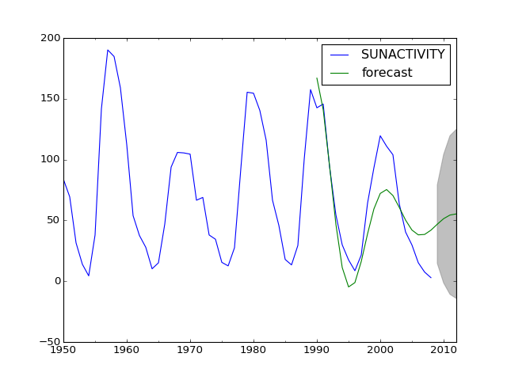

statsmodels.tsa.arima_model.ARMAResults.plot_predict¶
-
ARMAResults.plot_predict(start=None, end=None, exog=None, dynamic=False, alpha=0.05, plot_insample=True, ax=None)[source]¶ Plot forecasts
Parameters: start : int, str, or datetime
Zero-indexed observation number at which to start forecasting, ie., the first forecast is start. Can also be a date string to parse or a datetime type.
end : int, str, or datetime
Zero-indexed observation number at which to end forecasting, ie., the first forecast is start. Can also be a date string to parse or a datetime type. However, if the dates index does not have a fixed frequency, end must be an integer index if you want out of sample prediction.
exog : array-like, optional
If the model is an ARMAX and out-of-sample forecasting is requested, exog must be given. Note that you’ll need to pass k_ar additional lags for any exogenous variables. E.g., if you fit an ARMAX(2, q) model and want to predict 5 steps, you need 7 observations to do this.
dynamic : bool, optional
The dynamic keyword affects in-sample prediction. If dynamic is False, then the in-sample lagged values are used for prediction. If dynamic is True, then in-sample forecasts are used in place of lagged dependent variables. The first forecasted value is start.
alpha : float, optional
The confidence intervals for the forecasts are (1 - alpha)%
plot_insample : bool, optional
Whether to plot the in-sample series. Default is True.
ax : matplotlib.Axes, optional
Existing axes to plot with.
Returns: fig : matplotlib.Figure
The plotted Figure instance
Notes
It is recommended to use dates with the time-series models, as the below will probably make clear. However, if ARIMA is used without dates and/or start and end are given as indices, then these indices are in terms of the original, undifferenced series. Ie., given some undifferenced observations:
1970Q1, 1 1970Q2, 1.5 1970Q3, 1.25 1970Q4, 2.25 1971Q1, 1.2 1971Q2, 4.1
1970Q1 is observation 0 in the original series. However, if we fit an ARIMA(p,1,q) model then we lose this first observation through differencing. Therefore, the first observation we can forecast (if using exact MLE) is index 1. In the differenced series this is index 0, but we refer to it as 1 from the original series.
Examples
>>> import statsmodels.api as sm >>> import matplotlib.pyplot as plt >>> import pandas as pd >>> >>> dta = sm.datasets.sunspots.load_pandas().data[['SUNACTIVITY']] >>> dta.index = pd.DatetimeIndex(start='1700', end='2009', freq='A') >>> res = sm.tsa.ARMA(dta, (3, 0)).fit() >>> fig, ax = plt.subplots() >>> ax = dta.ix['1950':].plot(ax=ax) >>> fig = res.plot_predict('1990', '2012', dynamic=True, ax=ax, ... plot_insample=False) >>> plt.show()
(Source code, png, hires.png, pdf)

{kind=link}
{kind=link}